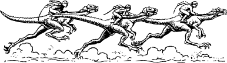

110
You meet with Melchar as planned, and after a meagre breakfast at the inn, you follow the crowds who are making their way through the streets to the Caeno racetrack. This magnificent establishment dominates the city’s eastern quarter and it has provided the venue for this spectacular derby for more than a century. Unlike the famous horse races held in Slovia and Lourden, the Caeno Derby is run by guanza—large bipedal lizards that are bred and trained throughout the Southlands. Huge sums are bet on the big race and the owner of the winning guanza stands to collect a purse of 100,000 Nobles.
{kind=link}

On entering the racetrack you and your companion make your way through the crowds to the parade enclosures. Melchar is keen to bet on the favourite—Forlu-zhan—but he wants to view the other runners before placing his wager with Wrok the Bookmaker. Having satisfied himself that the favourite will win, he goes off to the betting ring while you stay at the enclosure and watch the guanza lope past. As Forlu-zhan passes by, your Magnakai Discipline of Animal Control tells you that something is wrong. You sense that the favourite has been drugged with a mild tincture of graveweed and that he will be incapable of winning the race. Quickly you hurry to the betting ring to stop Melchar placing his wager. He is about to hand over his money when you catch up with him and tell him what you know. Melchar cancels his bet and Wrok the Bookmaker glares at you with undisguised hatred. He signals to a group of his henchmen and swiftly they surround you both. The moment the race begins you and Melchar are grabbed from behind and manhandled out of the betting ring. Wrok’s henchmen bundle you into a tack room below the public stands, but before they can lock the door, you draw your weapon and attack them.
6 Wrok’s Henchmen: COMBAT SKILL 38 ENDURANCE 36
If you win this combat, turn to 206.